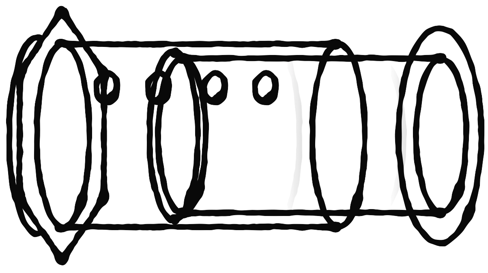

Me and My Aeropress

Sometimes I like to enjoy the finer things in life. One of the advantages of coffee is that it's easy to enjoy during times when it's hard to enjoy anything else. Say goodmorning to my favorite aeropress recipes, translated by me for folks like myself who don't want to break out the scales and thermometers for a cup of joe.
Blue Bottle re-Born
What you'll need:
- A handful of coffee grounds
- Kettle or water boiler or stove and pan
- Tap water
- Your trusty Aeropress
How to do:
- Bring your water to a boil somehow.
- Invert your aeropress, and measure two scoops of grounds into it.
- By now, your water should be a nice "not too hot" temperature. If you're a speedy scooper, chill for a sec. Pour it in your Aeropress to the "Three" mark.
- Count to thirty.
- Fill your Aeropress with water to the tippy-top.
- Stir a couple times.
- Count to sixty.
- Slap a filter and cap on your Aeropress, flip, press, and enjoy! Mmmmm.